Because there was no budget or time for formal research, I gathered quick insights by speaking with parents and nurses I knew through friends and work.
Horizon Children's Hospital
Streamlining pediatric ER triage with 92% accuracy
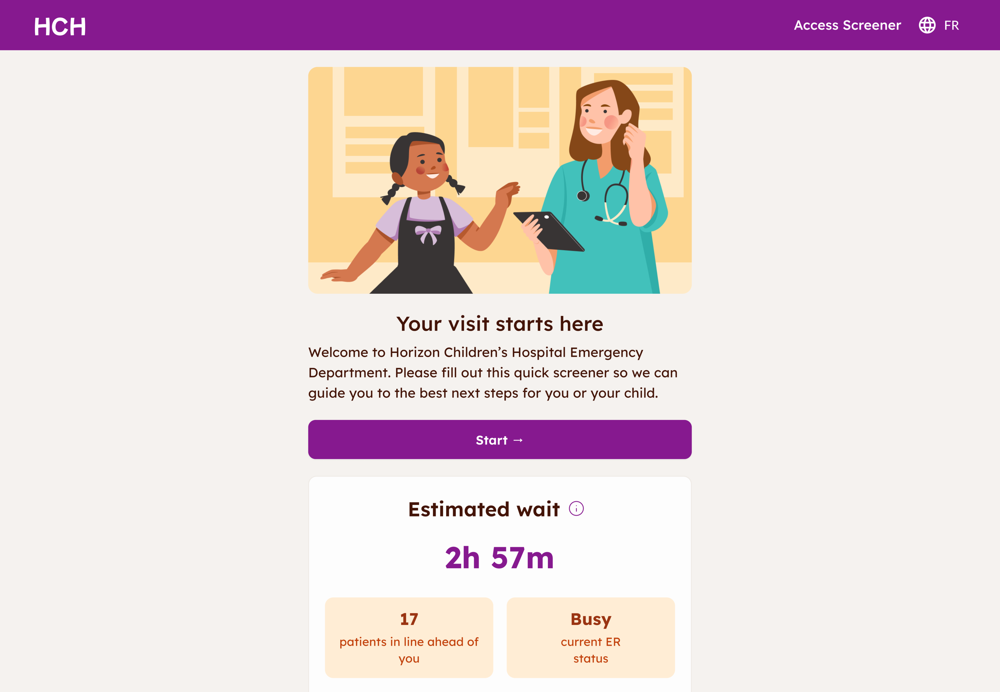
Project overview
What’s the Access Screener?
The Access Screener is a digital triage tool that helps patients and caregivers communicate their symptoms, prepares them for what to expect at the ER, and reduces the workload on overworked triage nurses.
It guides users through a short and simple questionnaire and gives them clear next steps without diagnosing or replacing clinical judgment.
Why does this matter?
Before this tool, caregivers often arrived confused and stressed. Nurses had to rely on rushed verbal descriptions, which slowed triage and occasionally led to missed urgency cues. Nurses are also really busy, so it’d be great if we could help them to triage less and to care for patients more.
Access Screener’s impact
- Nurses reported great routing accuracy during intake
- Caregivers said they felt “more prepared” arriving at the ER
- Fewer repeated clarifying questions at check-in
- The ER triage had an overall efficiency increase, allowing nurses to spend time on their patients
My role
- Led 0 → 1 design
- Shaped the information architecture and question logic with clinicians
- Designed fallback states, guiding language, and multi-child flows
- Ran interviews + usability tests with caregivers and staff
- Collaborated closely with engineering to validate logic and edge cases
- Created a scalable, bilingual UI pattern library for future hospital use
+ showed my little British Shorthair to anyone who asked when she meowed off-camera in meetings to improve team morale :)
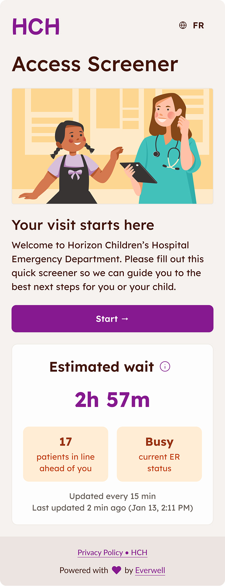
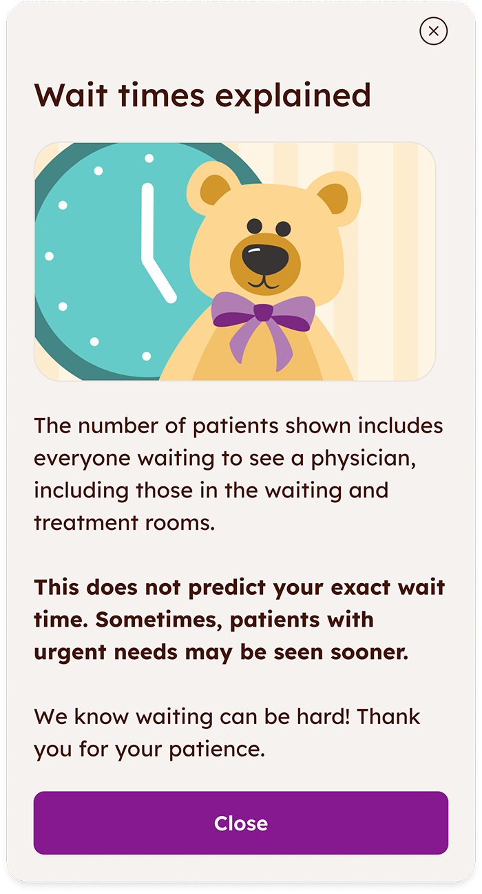
Background and pain points
Canada’s healthcare system struggles with long ER wait times, often due to overworked staff.
Triage nurses are stretched thin. Introducing a digital intake tool could help prioritize patients more efficiently and allow nurses to focus on care.
Parent
My child is sick and I’m very worried. It’s hard to think straight when talking to the nurse.
Triage nurse
I have to juggle a lot of different responsibilities. I’d love anything to make things a little easier and give me more time to care for patients.
So the client, a Canadian children’s hospital, came to us for a triage tool.
Design goals
-
Mobile-first, accessible, and fully bilingual (English and French).
-
Simple and reassuring (yet never childish) so patients & caregivers could follow along even when anxious, tired, or in pain.
-
Support zero-friction, no-login safe and secure interaction, and easy to revise answers.
Research
Snappy and scrappy!
I also reviewed academic papers, existing digital triage tools, and best-practice guidelines for designing safe systems in high-stress medical settings.
How might we... help young patients and their caregivers navigate the ER experience?
Use clear, non-medical language.
Tradeoff: We had to remove helpful clinical detail to avoid confusion, which meant the tool sometimes felt less precise to medical staff.
Keep the flow short and easy to follow.
Tradeoff: Reducing steps meant combining some questions, which risked losing nuance when symptoms were complex or unclear.
Allow users to revise answers at any time
Tradeoff: This added extra logic and edge cases for development, but it was essential because children’s symptoms can change quickly or stressed users may make mistakes.
The main finding
Users in the hospital, whether it’s patients or caregivers, are stressed and scared, which makes even simple medical questions feel overwhelming. The tool needs to be accessible and very supportive.
The deliverables
-
Phone webapp
-
Tablet & desktop webapp
-
In-ER TVs, posters, etc.
Design highlights
Welcome to the ER
Upon entering the emergency room, the users saw the TVs that encouraged them to scan a QR code to start the check-in.
Fallbacks, fallbacks, fallbacks
I needed to account for as many situations as possible. If the user doesn’t have a phone, they can borrow a tablet. If they can’t scan the QR code, they can type in the URL. If they have any other questions, they can ask the nurses - they are still available for questions and emergencies where completing a screener wouldn’t make sense.
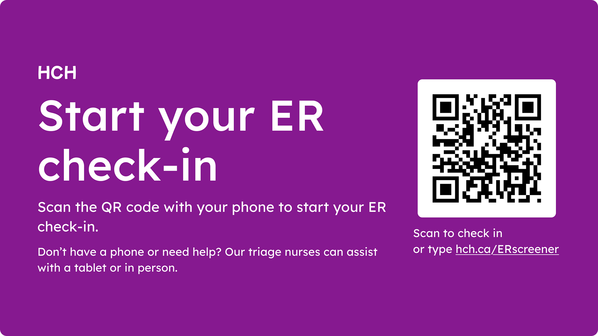
Home page
This is the first screen users see after selecting a language. The goal: make it feel calm and easy to understand even for someone stressed, tired, or rushing. The friendly visuals and the clear language help avoid overwhelm!
KISS - Keep It Simple, Stupid
Initially, we had a lot more feature ideas for the homepage (optional AI! games to keep children entertained! stories to explain what to expect from a hospital visit!), but dialling it back helped users feel at ease. I also helped prioritize the assessment by keeping the wait time lower on the page.
Intro screen
The intro screen gives people a quick heads-up about what the assessment will look like. I kept it very light and visual, so it’s easy to skim quickly.
Save and exit?
Chose to add a modal to prevent user exiting by accident even though it added a click when the user intended to exit.
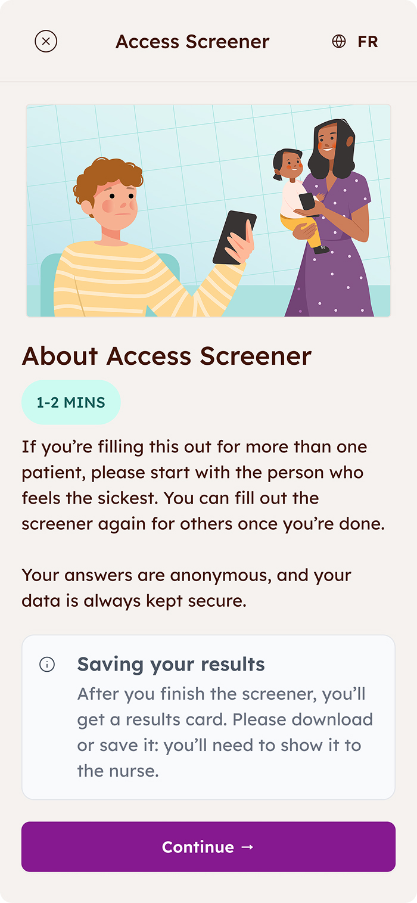
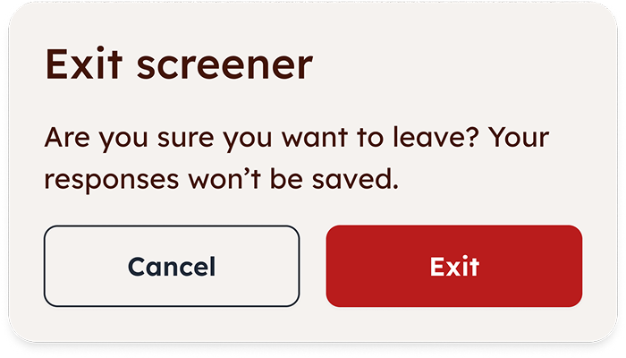
How old are you?
When I tested this screen, many caregivers assumed the question was directed at them, not their child, so it quickly became clear that the wording needed more clarity.
Two roads didn’t diverge in the woods, unfortunately
Due to technical constraints, we couldn’t split the flow into separate paths for caregivers and children. To resolve this, I added helper text to clarify whose age is being asked, reducing ambiguity without adding friction to the flow.
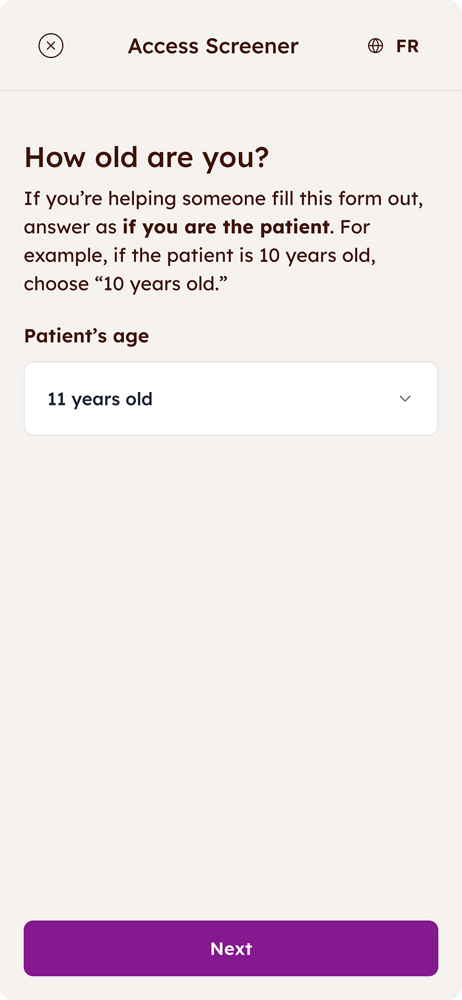
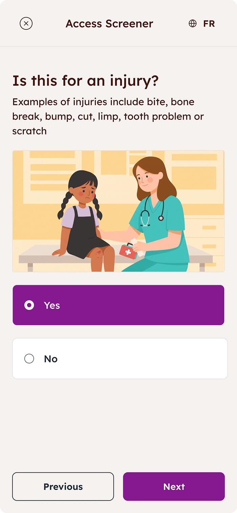
Getting results
The results page tells caregivers exactly what’s going on: a clear result, a quick next step, and a brief, patient-friendly summary of what they shared.
Let’s do it all over again
What if the child’s symptoms change? What if the whole family is sick with the flu in the ER? The user can easily retake the screener or add a patient through the “Update symptoms” button.
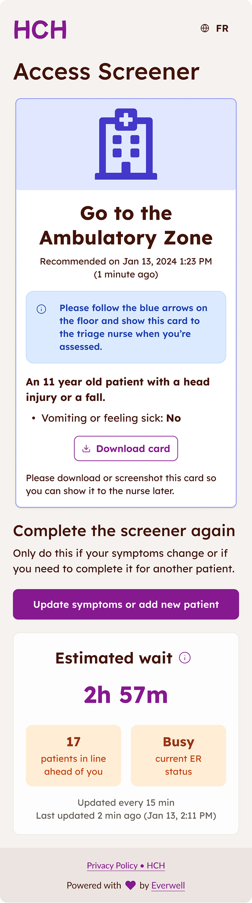
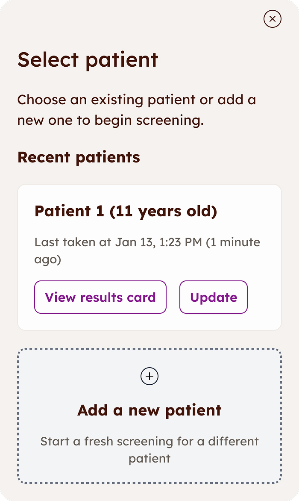
Multiple patients
This screen organizes results for multiple children into cards, each labeled with age and the order they were completed, to make it easy to keep track of everyone. To show that there’s more to see, I combined pagination with a little visual tease of the next card at the edge of the screen.
Breathe in and out
I chose a roomy layout with lots of breathing room even though it takes up more real estate: the last thing anyone in the harsh ER lights wants is to feel like they need a magnifying glass to read what’s on the card.
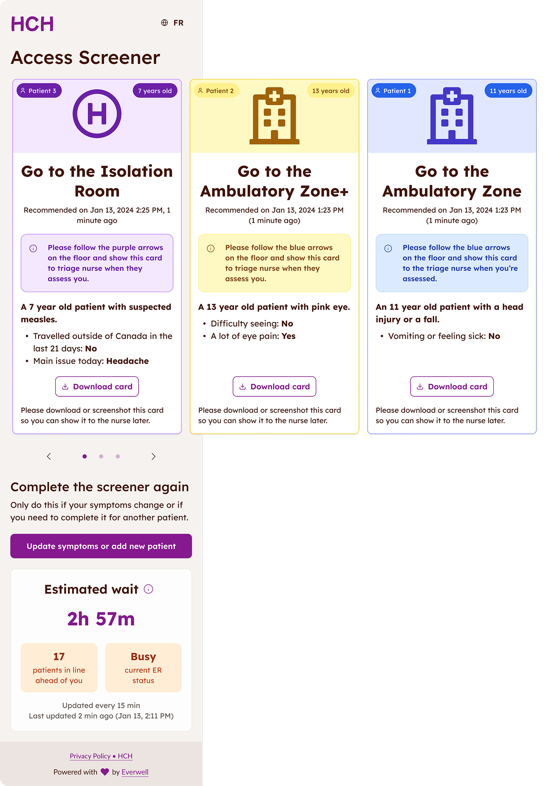
Leveraging AI
After launch, we learned that caregivers struggled to describe symptoms in their own words and the structured screener felt a bit too rigid.
To help, I designed an optional AI follow-up that lets users share more detail.
Stop AI from running wild
The AI step helps caregivers talk about symptoms more easily, but it’s fully optional and also guided by guardrails. The text before the screener makes it clear AI is never replacing clinical judgement.
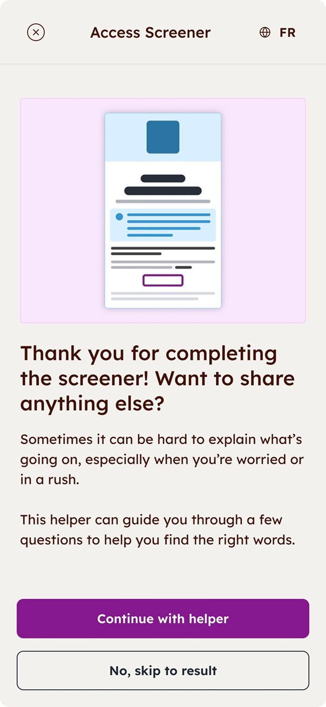
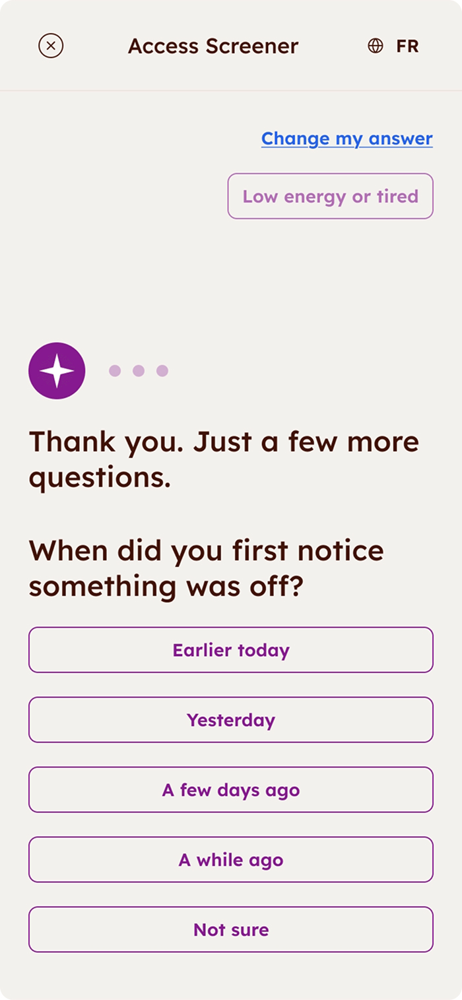
Outcomes
92%
85%
87%
The main metric - accuracy!
In the pilot run of the screener, it aligned with nurse triage 92% of the time. Caregivers shared clearer info, and nurses said the tool felt “natural” to use, even on very busy shifts.
Efficiency gains
Moving the first part of intake online saved nurses a lot of time on lower-acuity cases.
That freed them up to focus on patients who needed attention right away without adding extra steps for caregivers.
Designed for scaling and inclusivity
From the start, the design worked on any device, supported different accessibility needs, and rolled out in both English and French.
This made the tool easily scaleable for other hospitals and clinics!
If continued, I would...
-
Add tooltips for tricky medical terms and create separate flows for caregivers and older children.
-
Give users the option to share sensory or neurodiverse needs ahead of time so that the nurses would be aware
-
Separate flows for adult caregivers and children completing the questionnaire
Learnings
What worked well
Running the hospital trial was huge! The screener matched nurse triage 92% of the time, which showed the tool was genuinely accurate and useful. The collaboration with nurses, PMs, and engineers also clicked really well, and we stayed aligned and enthusiastic even with tight deadlines.
Most proud of
I’m proud that I led a complex project on my own and made an awful experience a little calmer and accessible for stressed out users. Designing something that helps families in a scary moment and hearing staff call it “easy to use” felt amazing! This is why I do what I do. :)
Best lesson learned
A metaphor from our VP of Product stuck with me: when building an MVP, don’t start with a car door or bumper: start with a skateboard. That mindset helped me guide our scope and prioritize value and quick wins!
Thank you for reading!
Explore other case studies using the buttons below.